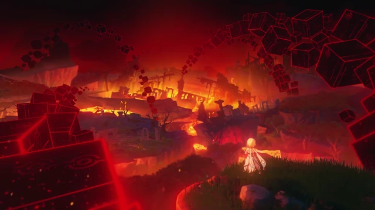

Teyvat & Unknown · Ancient Civilizations
Khaenri’ah
Khaenri’ah was a nation without an Archon, destroyed during the Cataclysm about five hundred years before the Traveler’s journey.

The Godless Kingdom Beneath the Earth
Hidden deep beneath the terrestrial surface of Teyvat lay Khaenri'ah, an ancient, advanced subterranean human civilization founded entirely without a ruling god. While the surface nations bowed before the Seven Archons and looked toward Celestia for guidance and elemental Visions, the people of Khaenri'ah believed in the sheer capability of human intellect, pride, and technological ingenuity.
To harness elemental and cosmic energy without divine favor, Khaenri'ah developed the esoteric science of 'Khemia'—an advanced form of alchemy that bypassed the natural laws of Ley Lines to create artificial life and transmutate primeval energy. They also engineered titanic mechanical warmachines known as 'Field Tillers' (the Ruin Guards, Ruin Graders, and Ruin Sentinels that wander Teyvat today), designed to carve out living space and protect their realm from subterranean monstrosities.
The Crimson Moon and the Eclipse Dynasties
The deep history of Khaenri'ah was divided between two legendary ruling eras: the ancient Crimson Moon Dynasty and the subsequent Eclipse Dynasty. Under the Crimson Moon Dynasty, ancient rituals and institutions such as the House of the Hearth's predecessor flourished, rooted in the celestial symbolism of the ancient red moon that once hung in the abyss.
Eventually, King Irmin of the Eclipse Dynasty took the throne as Khaenri'ah's final sovereign. As the Eclipse Dynasty entered its twilight years, King Irmin became incapacitated, and the kingdom's reliance on radical alchemy deepened under court alchemists such as Rhinedottir (Gold), who sought to push the boundaries of life beyond mortal constraints.
The Cataclysm and the Dark Sun
Five hundred years ago, Khaenri'ah's quest for forbidden power pierced the barrier between Teyvat and the dark cosmic void outside the firmament, unleashing the Cataclysm. Rhinedottir's dark alchemy gave birth to legions of riftborn abyssal horrors, including the dragon Durin, Elynas, and swarms of Rifthounds that poured from underground tunnels across the entire continent.
Seeing the very fabric of Teyvat threatened by alien Abyssal corruption, the Heavenly Principles and Celestia responded with merciless, absolute retaliation. The gods of the surface were commanded to descend upon Khaenri'ah, and the divine judgment shattered the subterranean kingdom into burning ash, extinguishing human civilization beneath the earth in an apocalyptic storm of divine retribution.
The Dual Curses and the Splintered Survivors
The tragedy of Khaenri'ah did not end with its destruction; it was cemented by Celestia's terrible curses. The pureblood descendants of Khaenri'ah—such as Dainsleif (the Twilight Sword), the court jester Pierro, and the Alberich clan—were struck with the Curse of Immortality. Forbidden from aging, dying, or returning their souls to the Ley Lines, they are doomed to watch their bodies and minds slowly erode while bearing the agonizing memory of their fallen home.
Conversely, citizens of mixed heritage or non-pureblood bloodlines who had settled in Khaenri'ah were struck with the Curse of the Wilderness, their physical bodies twisted and degraded into masked beasts known today as Hilichurls. In the present era, Khaenri'ah's remnants are bitterly divided: some formed the fanatical Abyss Order under the Traveler's twin to seek revenge against Celestia, others joined the Fatui under Pierro, while wanderers like Dainsleif hunt the Abyss in a desperate bid to preserve human dignity.
This is an original CoreGG reading guide, not an official HoYoverse article or a reproduction of the game text. Source links below identify the records used so you can check the original context.
Sources & references
Check these sources for the original game text and reference trail.